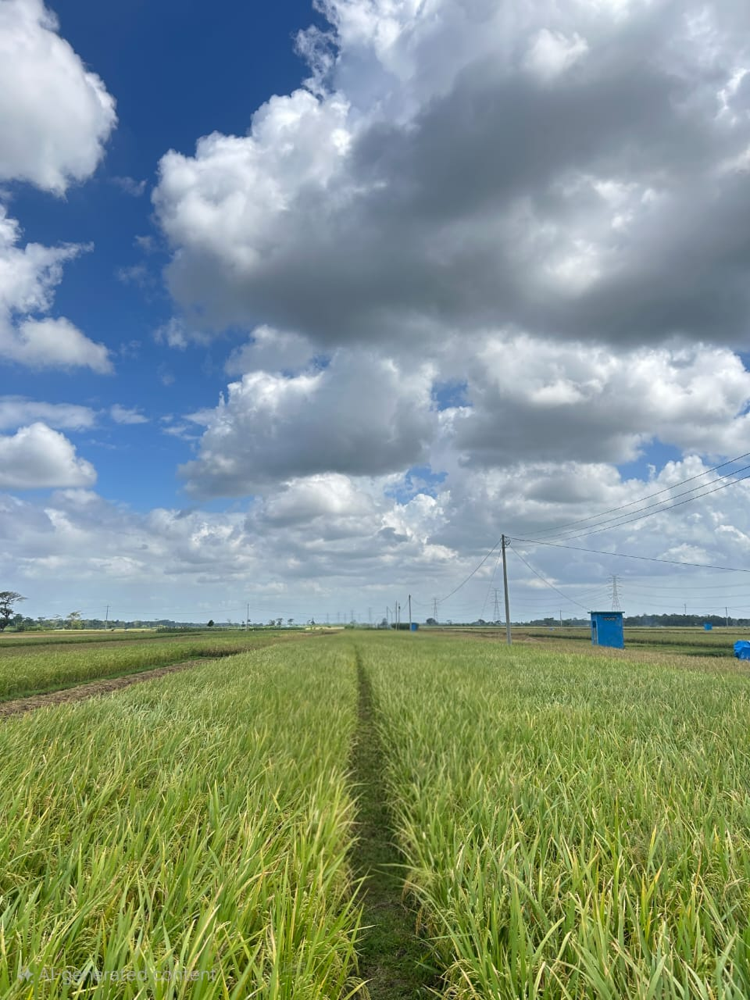

Dusun Krajan
Ds. Gondanglegi, Kec.Ambal, Kab.Kebumen
Beranda
Profil Dusun
UMKM Dusun
Galeri Dusun
Galeri Dusun Krajan
Momen-momen dan keindahan Dusun Krajan dalam gambar
Semua
Kegiatan
Pertanian
Budaya
Gotong Royong Warga

Pemandangan Sawah
Panen Raya
Pertunjukan Wayang